Lavori/UI/UX
Hoomie
Trovare casa e le persone giuste con cui viverci, spendendo il 95% in meno che con un'agenzia. L'app per studenti e fuorisede, oggi su store e web.
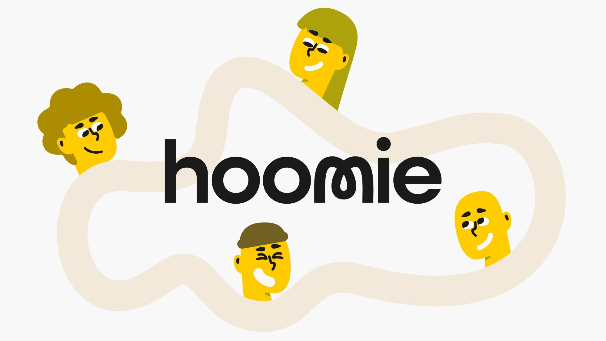
Il problema
Per cercare casa un fuorisede salta tra due o tre piattaforme di annunci e almeno quattro social, nessuno pensato per farlo. E se alla fine trova casa tramite un'agenzia, paga in media una mensilità di commissione.
Fuorisede con difficoltà significative nel trovare un alloggio
Ha fretta o molta fretta di trovarlo
Costo medio di un'agenzia immobiliare
Fonti: "Senza Casa Senza Futuro", UDU · Ministero dell'Università e della Ricerca · 4° Rapporto Federproprietà, Censis e Federproprietà
Obiettivo
Hoomie è un servizio a due lati: semplifica la ricerca della casa e mette in contatto le persone giuste per trovare una soluzione insieme. Rispetto alla commissione tipica di un'agenzia (651 €), il costo della ricerca si riduce del 95%.
Due tipi di utenti
Pubblicano alloggi interi o stanze singole e cercano coinquilini, sia gruppi sia singoli.
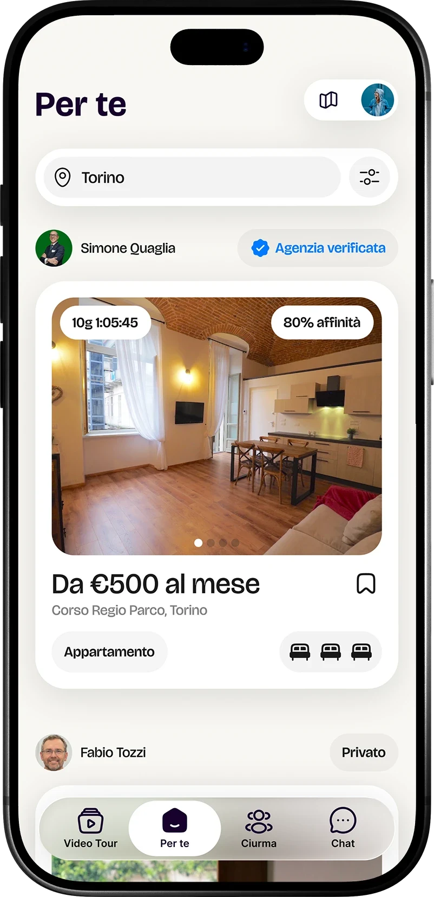
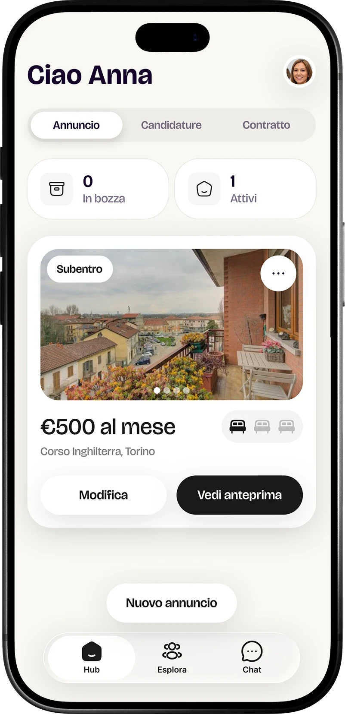
Vedono gli annunci ordinati per affinità e ricevono suggerimenti di gruppi di persone con cui andare a vivere.
Mappa del sistema
Per i fuorisede la complessità sta nell'interazione e nell'esplorazione delle soluzioni dentro l'app.
Per i proprietari il flusso è progettato per essere il più semplice possibile, spostando il focus da "devo trovare" a "mi faccio trovare".
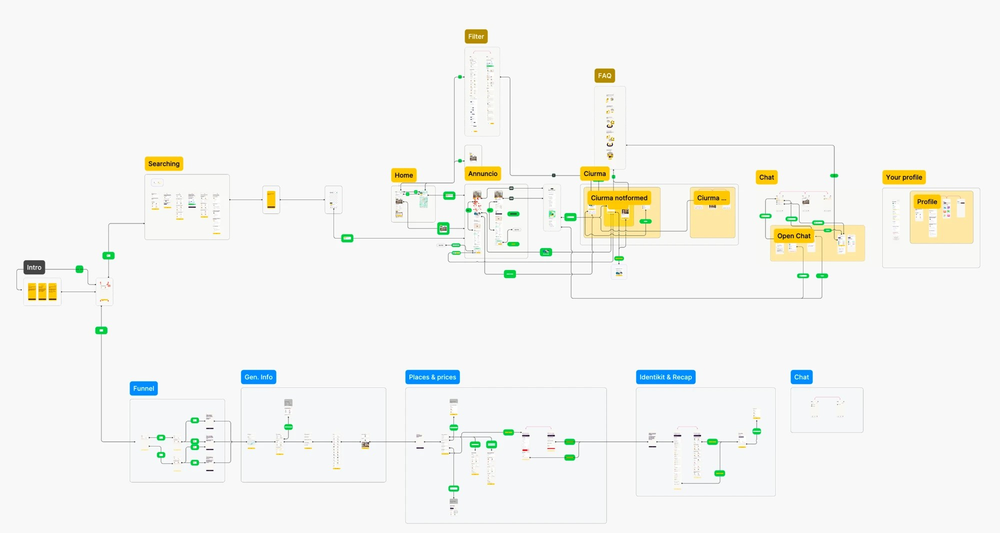
La funzione principale
Le persone vengono prima delle case.
Crew, aka Ciurma
Cosa comunicare. La sfida più importante è stata rendere comprensibile un'idea semplice: ci sono persone che potrebbero vivere benissimo insieme a te, in determinate case.
La scelta. Le persone vengono prima delle case. A colpo d'occhio emergono le affinità, che si possono approfondire nella sezione dedicata.
Il carosello delle case. Mostrare subito le soluzioni possibili permette di validare il secondo punto della scelta. L'obiettivo era mostrare in una sola schermata entrambi i punti cardine della decisione.
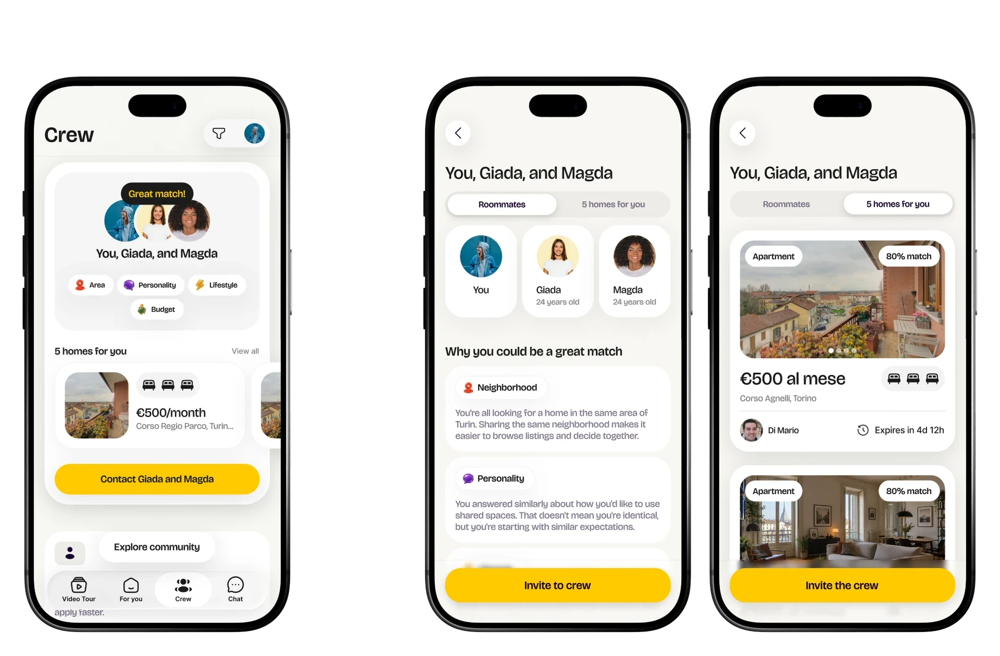
I profili
Gli archetipi rendono confrontabile un'informazione che di solito resta vaga: non solo "sono ordinato", ma "vai d'accordo con chi tiene in ordine".
Il rischio è ridurre le persone a sei caselle. Puntando sugli aspetti positivi di ogni archetipo, però, la decisione diventa più veloce mentre si esplora.
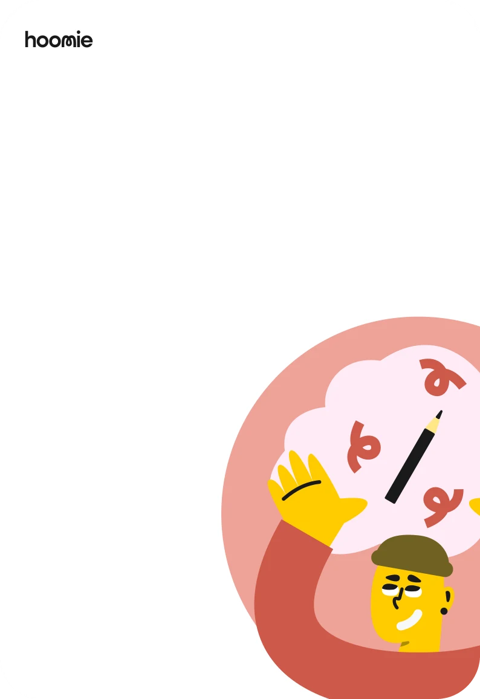
Creativa
Hai una mente visionaria: ami le idee nuove e le relazioni dinamiche.
Ti trovi bene con coinquilini flessibili e intellettualmente stimolanti.
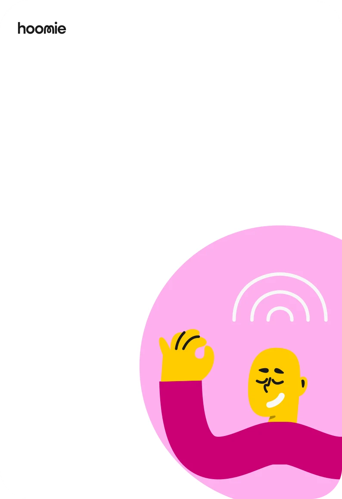
Empatica
Ami la pace e cerchi legami profondi e ambienti tranquilli.
Vai d'accordo con le persone sensibili che danno valore all'empatia.
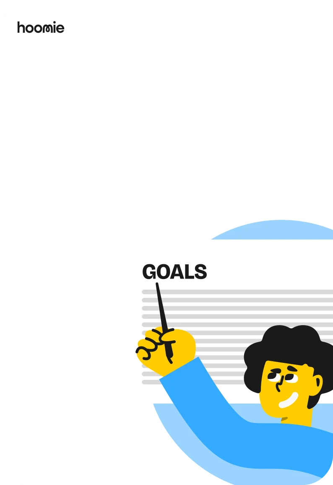
Leader
Sei una persona organizzata, decisa e orientata agli obiettivi.
Vai d'accordo con chi collabora e rispetta le regole.
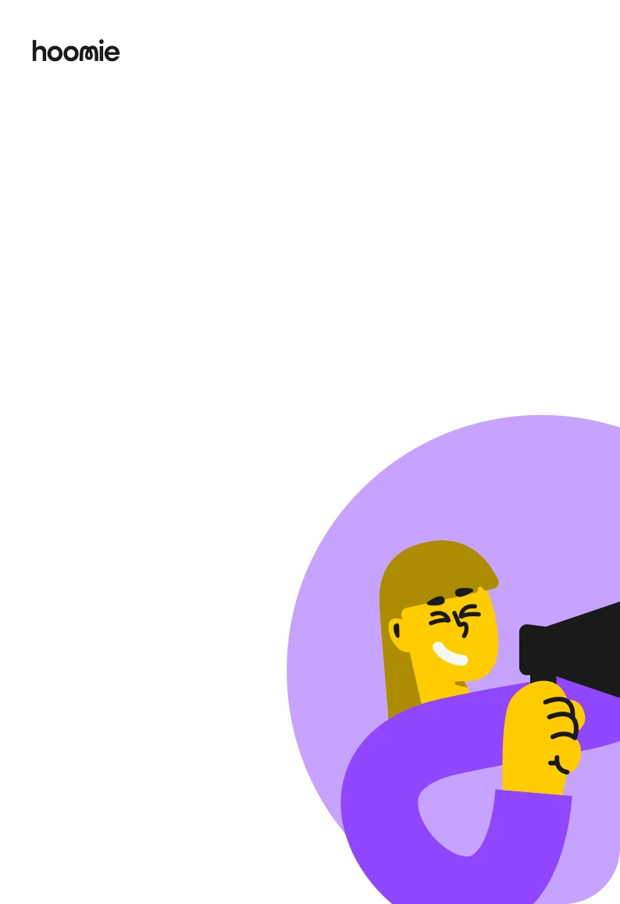
Ottimista
Sei una persona estroversa ed entusiasta, e ami divertirti.
Ti trovi benissimo con persone socievoli e positive.
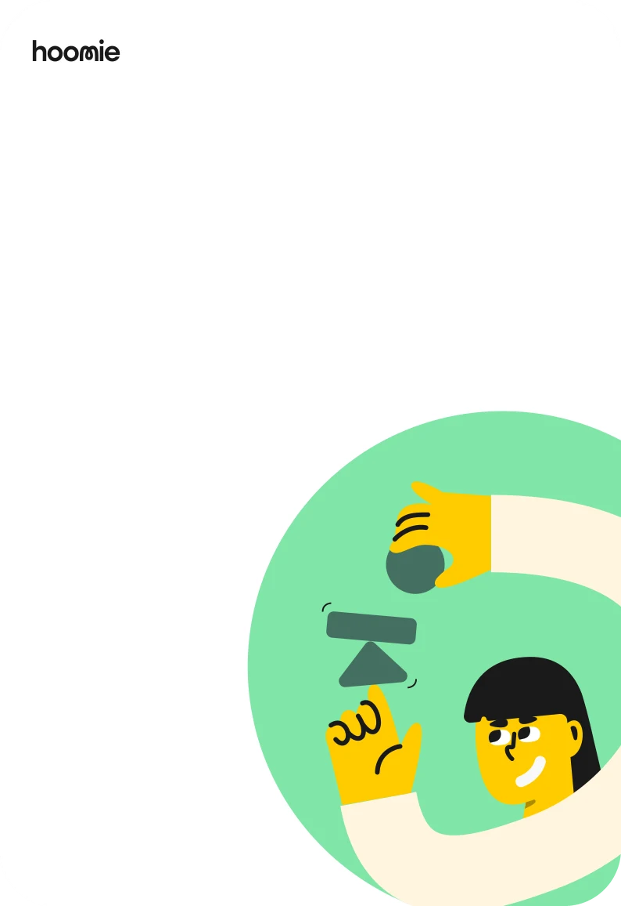
Pragmatica
Sei una persona affidabile: per te contano stabilità e rispetto reciproco.
Vai d'accordo con chi è ordinato e ama la tranquillità.
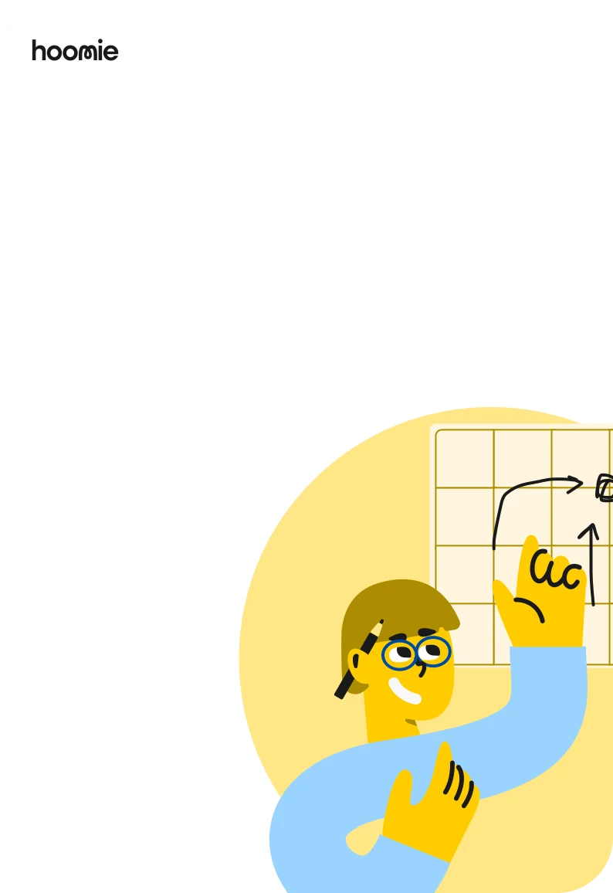
Stratega
Sei una persona analitica e introversa, ami la logica e l'ordine mentale.
Ti trovi bene con persone calme che rispettano gli spazi personali.
Trascina per sfogliare
Per i proprietari
Se si vuole ridurre la dipendenza dalle agenzie immobiliari, occorre fornire più strumenti e creare pattern che valorizzino l'immobile. Abbiamo deciso di puntare sui video tour, permettendo di mostrare la disposizione dell'offerta, integrando un feed verticale dedicato. La ricezione delle candidature punta a fornire un riepilogo rapido e diretto delle persone interessate.
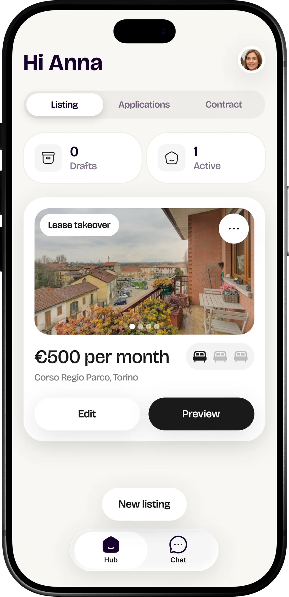
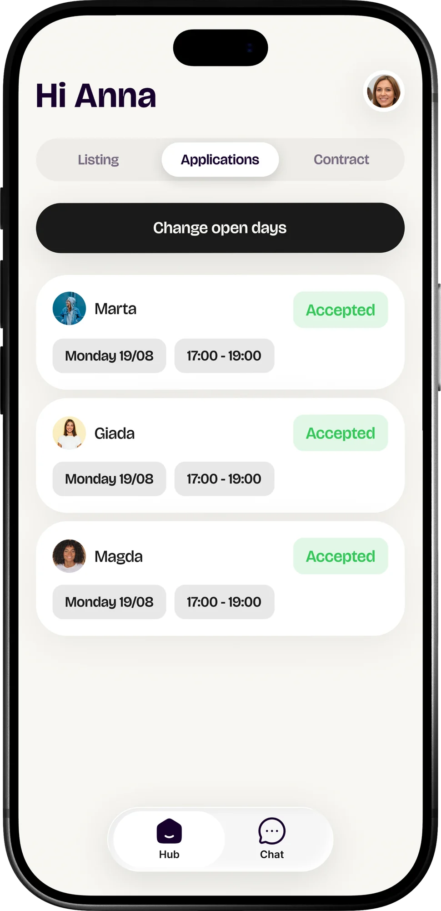
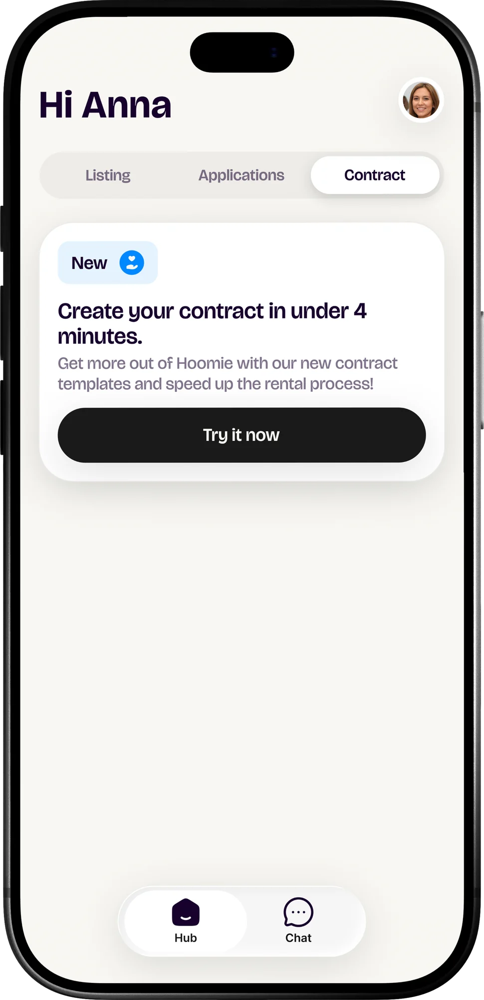
In sviluppo
Attraverso collaborazioni con partner esterni, stanno per essere introdotti i contratti in app, con possibilità di selezione del contratto ideale, inserimento dei dati e revisione totale sul contratto finale.
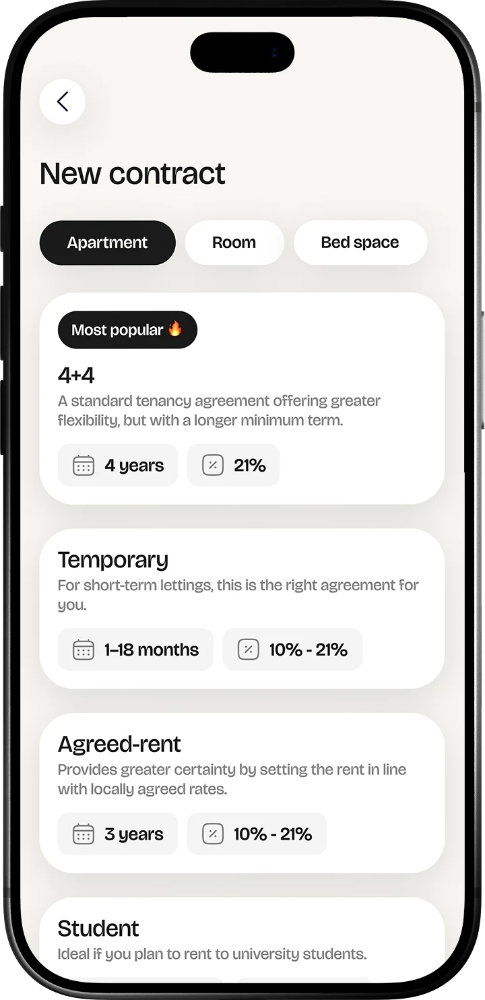
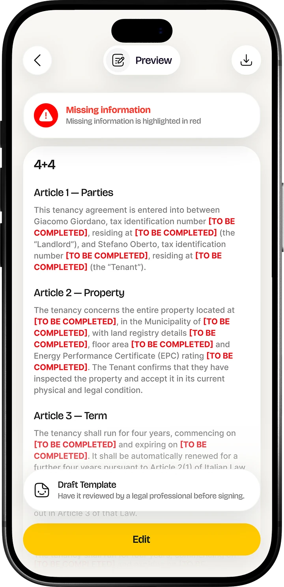
Design system
Un solo sistema di componenti per entrambi i lati del prodotto: schede degli annunci, profili, gruppi, filtri e domande dell'onboarding.
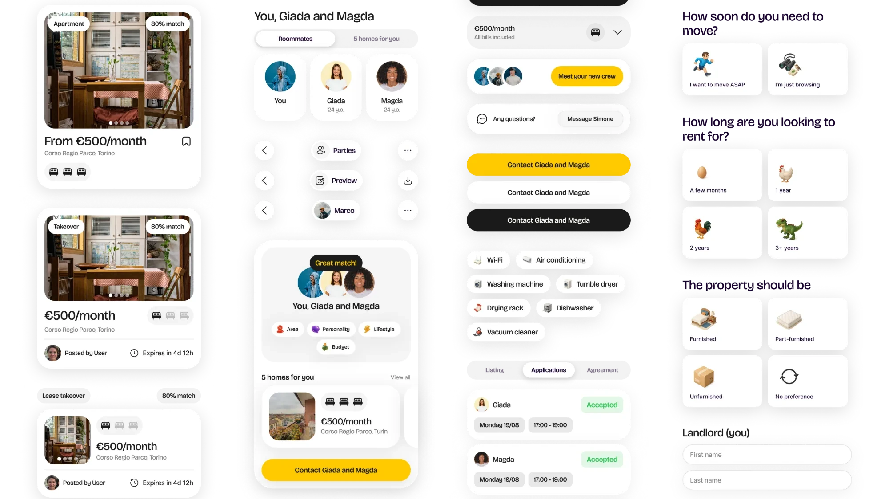
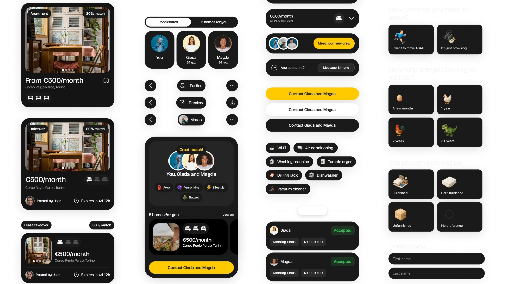
Risultati
L'app è online. Nei primi mesi:
Utenti nei primi quattro mesi
Candidature nei primi tre mesi, da 6 a 181
Candidature accettate (23 su 38)
Crew create
Nuovi profili al giorno, tra store e web
Profili completati
Tempo medio per sessione
Proprietari sul totale degli utenti, dall'8% di giugno 2026
Persone in cerca per ogni posto letto (462 su 43)
Oltre la ricerca
La ricerca della casa è solo un tassello. L'obiettivo di Hoomie è accompagnare i fuorisede in tutto il percorso, fino a farli sentire dei local nella nuova città.
Da fuorisede a local
Hooniversità
Scegliere l'università e capire l'ISEE
Sul sitoHoomie
Trovare casa e le persone giuste con cui viverci
App · una volta ogni qualche annoQuesta paginaHoomie Community
Spese di casa, turni ed eventi in città
Web app · ogni giorno